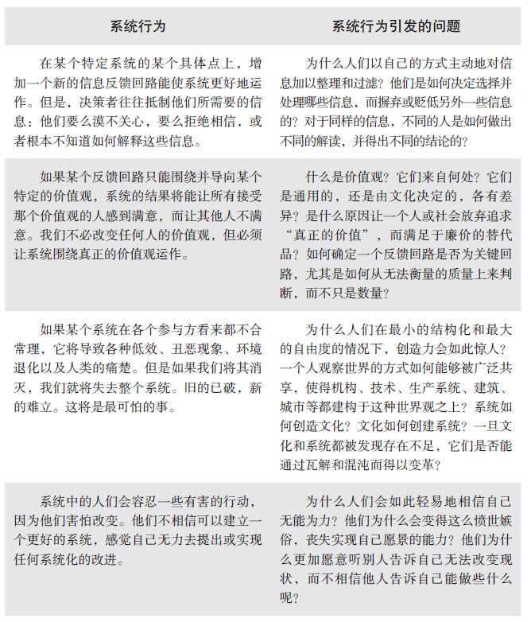

G.K.切斯特顿
作家
在这个世界中，真正的难题不是判断世界本身是理性还是非理性。最常困扰我们的往往是，世界是基本理性的，但并非完全理性。生活是理性的，但如果完全按照逻辑来推论，却可能到处是陷阱。它看起来有一定量化关系，却不可能完全精确地用数学公式来度量；它看起来有一定规律，却又随时充满了惊喜。
在工业社会长大的人，若热衷于系统思考，很可能会犯一个严重的错误。他们可能会假定，通过系统分析，可以认清系统中的相互联系以及复杂纠葛，借助计算机的威力，最后找到预测和控制系统的钥匙。不幸的是，这是错误的观念，其根源在于工业时代根深蒂固的心智模式，即相信存在一把预测和控制的钥匙。
一开始，我也是这么认为的。我们所有这些在麻省理工学院就读系统学专业的学生都是这么假定的。我们或多或少都天真地认为，通过学习，就可以练就一双洞察复杂世界的“慧眼”。大家都为此而着迷，努力钻研，如同许多前人所做的一样。但是，我们高估了自己的发现。这么做并不是想存心欺骗他人，只是表达了个人的意愿或期望。对我们来说，系统思考不仅是微妙、复杂的“头脑体操”，更是为了让系统高效地运作。
就像一位即将开始印度探秘之旅的探险者却误打误撞闯进了西半球一样，我们确实发现了一些东西，但它们根本就不是我们自认为的那样。系统思考与我们过去习以为常的观察、分析、认知世界的方式是迥然不同的。后来，随着对系统思考的理解日渐深入，我们慢慢发现，系统思考的价值比我们之前想象的还要大，只不过要做到这一点，必须使用与以往不同的方式。
我们认识到的第一个问题是，理解了如何修补一个系统和实际动手去修补它，完全是两码事。之前，我们曾就“实施”这一话题进行过很多次热烈的讨论，当时，我们的真实想法只不过是“如何让管理者、市长和相关机构的负责人接受我们的建议”。
然而实际情况是，就连我们自己也没有采纳自己的建议。我们理解了上瘾的结构，也多次给别人讲解，但我们自己却不能一天不喝咖啡；我们都知道目标侵蚀的动态特性，但我们自己的慢跑又能坚持多久呢？我们一再警告别人不要陷入竞争升级和转嫁负担的陷阱，但我们在对待自己的家人时却又一再犯类似错误。
社会系统是人类文化思考模式的外在体现，也是深层次的需求、情绪、优势和劣势的反映。改变它们绝非易事，不是简单说一句“我们现在正面临严峻的挑战”，人们就能改变，也不是因为我们知道了改变的好处就能改变。
我们认识到的第二个问题是，系统洞察力会让你产生更多的问题。虽然对系统的洞察力让我们理解了很多之前所不曾理解的事情，但它们不能帮我们理解所有的事情。事实上，你所理解的事情越多，新出现的问题也就越多。就像人类所发明的其他透镜一样，系统思考也能让我们透视微观世界和宏观宇宙，发现很多神奇的事物，在过去这些可能都是一些难以理解的奇迹，但同时它也能让我们发现很多新的奇迹。借助这一项新工具，我们能够揭开很多根植于人类思维、心灵深处的神秘事物，更好地理解系统如何运作。下面，我列举了我们发现的几个问题：
系统思考者并非首批或唯一提出类似这些问题的人。当我们开始探询这些问题时，我们会发现各个学科领域、图书典籍、历史记录，也都曾问过同样的问题，并在某种程度上给出过答案。我们的研究的特别之处，并不在于我们的答案，甚至不是我们的问题，而是系统思考工具本身，它发端于工程学和数学，应用了计算机技术，受机械论思维模式的影响，追求对系统的预测和控制，这让它的实践者会面临人类最深刻的未解之谜。我坚信，即使对于最坚定的技术统治论者，系统思考也会让我们发现，要想应对这个充满各种复杂系统的世界，需要的不只是技术统治。
自组织、非线性、反馈系统从本质上是不可预测和被控制的，因此，我们只能以最为一般的方式去理解它们。想要准确地预见未来并完美地提前做好准备，是不现实的；想要让复杂的系统只做符合我们期望的事情，也是不现实的。即使在最理想的情况下，也只能是暂时地实现。我们永远无法完整地理解这个世界，无法像还原论者所期望的那样彻底解构这个世界。科学本身，从量子理论到模糊数学，都会引导我们走入无法回避的不确定性之中。只要不是最为琐碎、具体的目标，我们就无法将其优化；我们甚至都不知道到底要优化什么；我们也不能跟踪每一件事情的发展、变化。虽然我们人类常把自己当做无所不知、无所不能的征服者，但无论是对于大自然，还是人与人之间，抑或是我们自己创造的各种组织，我们都尚未建立起一种恰当的、可持续的关系。
对于那些坚信自己是宇宙主宰的人，系统思考所揭示的不确定性是令他们难以接受的。如果你不能理解、预测和控制系统，那该怎么办呢？
系统之思
未来是不可预测的，但它可以被想象，并在人们的脑海中栩栩如生、呼之欲出；系统不可以被控制，但它们可以被设计和重构。
然而，只要我们认识到并愿意放弃控制的错觉，稍加等待，系统思考就能得出另外一种结论，如此鲜明耀眼，那就是：我们可以有很大的作为空间，但要换一种截然不同的方式。我们不能让风起云涌、变化万千的大千世界变得四平八稳、毫无意外，一切尽在掌握，但我们可以预料到各种意外，从中学习，甚至能从中获益；我们不能把自己的意志强加于系统之上，但我们可以聆听系统的声音，听它告诉了我们什么，并发现如何顺应系统的特性，使我们的价值观更好地与之匹配，从而创造出另外一些更好的事情来，而这都是无法只靠我们的意志来实现的。
我们无法控制系统，或将其搞清楚，但我们可以与系统共舞！
我已经知道这一点可以做到。通过漂流、园艺、演奏音乐和滑雪，我懂得了如何与大自然伟大的力量共舞。这些都需要一个人保持完全清醒、高度关注、竭尽全力，并对各种反馈做出快速响应。对于我来说，这些感受都是独一无二的，而在我从事研究、管理、政府公务和与人相处时，从来没有出现过类似的情况。
但是，这并不意味着它们不需要同样的投入，从我们开发的每一个电脑模型中涌现出来的信息，也需要与系统共舞。要想成功地在这个系统的世界里生存，需要我们付出更多，不只是计算能力。我们需要奉献出全部的人性，包括理性分析、识别真理和谬误的能力、直觉、同理心、对未来的期许以及道德的力量，等等。
在本章中，我试图总结出一些最为通用的“系统智慧”，作为本书的结尾。这些都是我个人通过对复杂系统的建模以及与众多建模者共同探讨而学习到的，是我亲身收获的一些经验教训，是植根于系统的基本原理之上提炼出来的一些概念和实践做法，虽然不尽完美，但大家可以在自己的工作和生活中应用它们、感受它们。它们是基于反馈、非线性和自组织等世界观之上的一些行为。当达特茅斯大学那位工程学教授注意到我们这些搞系统的家伙是“另类的”，并且疑惑为什么我们的看法与他有差异时，我想，这些可能就是他发现的不同之处。
我在这里列出的清单可能是不完整的，因为我依然是系统思考学派中的一名学生。同时，这也不是学习和应用系统思考的“独门秘籍”，有很多种方法可以学会与系统共舞。但是，大家可以把它作为学习与系统共舞的起点。我注意到，当我的同事们遇到一些新的系统时，他们会自然而然地这么做。
在你想以任何方式去干预系统之前，首先要观察它是如何运作的。如果它是一首乐曲、一段激流或者是某种大宗商品价格的波动，就要研究它的节拍；如果它是社会系统，就要观察它是如何运作的。研究它的历史，询问那些曾长期关注它的人们的意见，让他们告诉你曾经发生过什么。如果可能的话，去寻找或者制作一张图表，显示系统实际数据的时间变化态势——人们的记忆不是一直很可靠的，尤其是对于相对久远的事件。
这一方针看起来简单，实则不然。除非你能养成这样做的习惯，否则就会多走很多的弯路。从系统的行为开始，强迫你自己关注于事实，而不是各种理论。同时，这也有助于防止你快速陷进自己的信念、误解或其他类似误区之中。
在我们周围，其实有太多的误解，几乎到处都是。
比如说，很多人坚信年降水量在减少，但是当你查看年降水量的数据之后，你会发现，真实情况是降水量的波动性增加了，并非降水量绝对值的变化——干旱程度是加剧了，但洪涝灾害也更大了。再如，当一些权威专家宣称牛奶价格要走高之后，真实情况是牛奶价格持续走低；当专家告诉我汇率会下降时，其后的情况却是汇率一路走高；虽然人们一直预期财政赤字会下降，但赤字占GNP的比例却比以往任何时候都要大。
观察系统中的各种变量如何一起变动或者不一致地变动，是非常有趣的。但是，你要去观察真实发生的状况，而不是听人们对于发生的状况的解释，这样可以规避许多有意或无意的因果假设。例如，新罕布什尔州每一位行政委员看起来都支持减税以支持城镇的发展，因为很多人想当然地认为税率和增长率是有关联的，但是如果你把增长率和税率做成一张图，你会发现它们之间的分布是随机的，如同新罕布什尔州冬日的夜空繁星，完全没有内在的关联。
从系统的行为开始，也能把个人的思想引导到动态的分析上，而不是静态的研究——不只是问“哪儿出了问题”，也包括“到底是怎么弄成这样的？”、“是否有可能是另外的行为模式？”、“如果我们不改变方向，继续发展下去，事情最后会变成什么样？”同时，注意了解系统的力量，你可以问：“在系统里，什么运作得很顺利？”从几个变量的历史数据开始，以散点图的方式去揭示它们之间的关系，不仅可以发现系统中存在哪些因素，也可以了解它们之间是如何相互连接的。
最后，从历史数据开始，也能让人们根据系统的真实行为去定义问题，而不是用通用的或假想的趋势来干扰或分散注意力，掩饰因为“没有我们偏好的解决方案”而产生的不安感。倾听任何讨论，不管是在家庭中的对话，还是在公司会议上的意见分歧，或者是媒体上专家们的辩论，并且留意观察人们是如何得出解决方案的——在大多数情况下，都是“预测、控制”的模式，或者是把自己的意志强加于人，没有关注系统的状况及其原因。
当我们画出系统结构图，并接着写出来各种变量之间关系的方程式，这样就强迫我们把自己内心隐藏的各种假设投射出来，并精准地表述它们。因为我们的模型需要保持完整、符合逻辑，并且前后一致，所以我们不得不把自己关于系统的每一个假设都摆出来，让其他人（也包括我们自己）能够看到它们。虽然心智模式是非常微妙的，但一旦要放到模型中，我们的假设就不能再摇摆不定，在某一次讨论中这么说，到下次讨论时又那么说，前后矛盾，显然是行不通的。
系统之思
心智上的灵活性，是你在充满了各种灵活的系统中生存的必要条件；这包括愿意重新划定系统的边界、注意到系统转换到一种新模式，以及知道如何重新设计系统结构的能力等。
你不必非得以系统结构图或方程式的方式来表露自己的心智模式，尽管这样做是非常好的方法。你也可以通过语言、列表或者图片、箭头等方式，来表达你的想法，什么东西与另外一些东西存在关联，这些都包含着你的心智模式。不管以什么方式，你这样做得越多，你的想法就会变得越清晰，你承认各种不确定性并修正自己错误的速度就越快。这样，你就能学到更多，变得更为灵活。
请始终牢记，你所知道的每一件事，以及任何人知道的任何事，都只是一个模型。把你的模型拿出来，放到人们看得见的地方，再邀请其他人来挑战你的假设，并补充说明他们自己的假设。这样做不是为了比较、选出哪种假设、解释哪个模型是最好的，而是要尽可能多地收集各种可能的解释，并把它们都当做是合理的，除非你发现了一些证据，让你可以排除其中的一种或几种解释。在这个过程中，你也要保持警惕，因为其中可能包含着你自己的情绪或偏好，让你选择性地看到支持你的观点的证据，或者剔除掉了你自己不认同的一些假设。
把模型也拿出来，放到阳光之下，让它们尽可能地精确，用各种证据对其进行检验，如果没有得到证据的支撑，也应该勇于舍弃。这就是科学的态度和方法。但是，即使在科学研究领域，这样的做法也不常见，更不用说在社会科学、管理学、政府管理或日常生活中，就更为罕见了。
到现在，你应该已经了解了信息如何把系统结合到一起，并且知道信息的延迟、偏差、分散或缺失如何使得反馈回路的功能失调。很明显，如果决策者缺少信息，他们就无法做出应对；而如果信息不正确，反应也不可能正确；如果信息是滞后的，更不可能及时做出反应。在我看来，系统中的大多数错误，都是由于信息的偏差、延迟或缺失所致。
如果可以的话，我想向各位再多提醒一点：你不能歪曲、延迟或隐瞒信息。如果扰乱了系统的信息流，系统的运作就会陷入混乱或疯狂。相反，如果能使信息更及时、准确、完整，系统就会运做得更好，轻松而自在。
例如，1986年，美国联邦政府出台了新的《有害气体排放法案》（The Toxic Release Inventory），要求美国所有公司每年向政府报告它们所有工厂对外排放的有害气体总量。通过《信息自由法案》（The Freedom of Information Act），公众可以获得这些信息。从系统的观点看，后者堪称是整个美国最重要的一部法律。1988年7月，第一批有关化学排放的数据被公开。虽然报告了的排放就不算是非法的，但是把它们发表在企业年报上也不怎么好看，尤其是那些被列入“本地区十大排放单位”之列的排放大户压力更大。因此，虽然没有法律诉讼，没有强制性的减排指标，没有罚金，没有惩罚措施，但情况就发生了明显改善。在两年之内，全美国的化学排放量减少了40%（这只是从报告的数字来计算的，我们假定它也是符合事实的）。一些公司已经出台了相关的政策，计划将其排放量减少90%，这仅仅是因为之前被企业内部控制的信息被公开了。
从某种意义上讲，信息就是权力。任何对权力感兴趣的人都会很快认同这一观点。媒体、公众人物、政治家、广告发布者等对公众信息传播有一定影响力的机构，都有很大的权力，甚至超出了大多数人的想象。在很多时候，它们会为了自己的利益，在短期内对信息进行过滤，有选择性地发布信息，并对信息流进行引导。这可能就是我们所在的社会系统经常会变得失控的重要原因之一。
我们的信息流主要是由语言来组成的，而人们的心智模式也大多是通过词语来表达的。因此，尊重信息首先意味着避免语言污染——尽可能清晰、准确地使用语言；其次，要想办法扩展我们的语言，以便能够更有效地谈论复杂性。
弗雷德·考夫曼（Fred kofman）在一篇系统学期刊的文章上写道：
语言可以作为一种媒介，通过它，我们可以创造出新的理解和新的现实。事实上，我们不是在讨论我们所见的东西，我们只能看到我们能够讨论的东西。我们对世界的看法取决于我们的神经系统和语言的交互作用，这两者都是“过滤器”，影响着我们能看到的事物……语言和组织的信息系统都不是客观地描述外部存在的方式——它们从根本上塑造了其成员的感知和行动。要重塑（社会）系统的测量和沟通系统，就要在最根本的层面上重塑所有潜在的交互作用。与战略、组织结构或文化等比起来，语言作为现实的表述方式，是更为根本的。
如果在一个社会中，人们不停地在谈论“生产力”，而很少使用或很难理解“适应力”这个词，那么整个社会就将变得更有“生产力”，但“适应力”会降低。同样，如果人们不能理解或使用“承载能力”这个词，整个社会将很快超过其承载能力；如果人们谈起“创造就业”时，就意味着必须要靠公司去做一些什么事，那么社会中的大多数人就没有紧迫感和动力，去为自己和他人创造出更多的工作机会。如果公司的使命是“创造利润”，就可能会轻视员工在价值创造过程中的角色。同样的情况还有“和平卫士”，这可能意味着必须拥有导弹，或者不可避免的“附带损害”，以及可能需要采取的“最终解决方案”或“种族清洗”，包括温德尔·贝里（Wendell Berry）所谈论的“暴政统治”。
让我感触很深的是，我们已经观察到，在过去的大约150年里，语言在日渐退化，要么是变得没有意义，要么是对其原本含义的破坏。同时，我也相信，伴随着语言的日渐退化，个人和社区的衰变、瓦解也会逐渐加剧……
他接着说道：
随着表述的退化，语言已基本上丧失了标示作用，因为它未被认真地使用，已没有了特定的所指。人们的注意力被各种百分比、分类或抽象的函数瓜分……用户很可能不再需要依赖或指望语言，因为它不能定义任何个人的立场或行动基础。它唯一实用的价值就是支持“专家意见”，大量不带个人色彩的技术行动已经开始了……这将是一种残暴的语言：暴政统治。
系统之思
尊重语言的第一步是尽可能地保持它的真实、具体和有意义——这和保持信息流的清晰、准确是相同的。第二步是扩展语言，使其能反映我们对系统的理解。
为什么爱斯基摩人有那么多词语来形容雪，那是因为他们曾经深入研究和学习如何充分地利用雪。他们已经将雪变成了一种资源，当成了他们可与之共舞的系统。而我们所处的工业社会，只是刚刚开始拥有和使用系统的词汇，因为我们刚刚开始关注和利用复杂性。类似“承载能力”、“结构”、“多样性”这样的词汇，甚至是“系统”这个词，都是旧的词汇，但现在，它们的含义正变得越来越丰富，意义越来越精准。同时，我们也必须学会发明一些新的词汇。
电脑中的文字处理程序有拼写检查能力，这让我必须手工增加一些词语，因为它们原来并不包含在电脑的词典中，包括写作本书过程中常用的下列词语：反馈、吞吐量、次优化、自组织和可持续性。
在我们的文化中，数字总是令人着迷的。这让人们自然地产生了一种想法，即那些可以测量的东西要比不能测量的更为重要。你要是不信，可以先想一分钟。这可能意味着，我们认为数量比质量更重要。如果数量是某一个反馈回路的目标，那么它将成为我们关注的焦点，是我们的语言和体系的中心。无论是激励、评估，还是奖励，都离不开数量这个指标。这样的结果就是数量更为优先受到重视。你可以观察和考虑一下，在你周围的世界中，在自己的脑海里，到底是数量还是质量更为突出和重要？
作为系统建模者，我们曾经不止一次地被那些从事科学研究的同事们所嘲笑，因为我们无法将一些重要但无法衡量的变量纳入模型之中，诸如“偏见”、“自尊”或者“生活质量”等。由于计算机模拟需要数值，我们不得不编造出一些定量化的方法，以衡量那些定性的概念。比如说，我们假设偏见的取值范围位于-10到+10之间，0分意味着毫无偏见，-10分意味着完全负面的偏见，而+10分意味着完全正面的偏见，即你不可能做错事。现在，假设某人对你的偏见度是-2，或者+5，-8，这将对你的工作表现有什么影响？
实际上，在我们的工作中，真的有一次必须把偏见和绩效之间的关系放到模型之中。[1]该项研究是一家公司想知道如何更好地对待少数民族裔员工，以及如何帮助这些员工走上公司的领导梯队。我们面试过的每一个人都认为，在偏见和绩效之间真的存在着某种联系。虽然采用哪种衡量方式是武断的，可以是1到5，也可以是0到100，但是如果不把“偏见”放到研究之中，肯定是不科学的。因此，我们试着把“偏见”放到模型之中，并努力去测量它。当公司里的员工被问及偏见和绩效之间的关系，他们提出来的几乎都是一种非线性关系，在此之前我从未在模型中见过此类关系。
如果某件事物难以量化，我们往往对其视而不见或者忽略它，这会导致模型不完善。在前面，你已经知道了系统常见的陷阱，其中包括围绕那么易于测量的东西来设定目标，而不是根据那些真正重要的东西。所以，不要再掉进此类陷阱。上帝赋予人类的不只是数数的能力，也包括评估品质的能力。希望你能成为一名质量检测员，到处走动，随时随地检查、确认质量是否达标。
举例来说，如果某件东西是丑陋的、俗气的、不相称的、比例失调、不可持续的，或者道德格调低下、危害环境、有损人格的，就不要让其通过。不要再让“如果你不能定义和测量它，你就不必关注它”这类的说教限制住你的手脚。没有任何一个人可以定义或测量正义、民主、安全、自由、真理，或者爱，也没有任何一个人能够定义或测量任何价值观。但是，人们却都离不开这些东西。如果我们不去谈论它们，不去检查它们是否存在或达标，在设计系统时也不去设法实现这些目标，它们将不复存在。这是不可想象的。
吉米·卡特总统有一种非凡的能力，他可以用反馈的概念来思考系统性问题，并制定反馈的政策。不幸的是，因为国会和公众并不理解反馈，所以他在面对如何解释自己的想法、以说服国会和公众时，一度感到很困难。
例如，在石油进口量飙升的时期，他建议对美国国内消费的汽油征税。如果石油进口持续增加，汽油税也将进一步提高，直到能够抑制住对石油的需求，并迫使人们寻找石油的替代品，并减少进口。如果石油进口量降至零，汽油税也将降为零。
这一建议没有获得通过。
卡特也曾试图处理从墨西哥偷渡美国的非法移民潮。他认为，只要美国和墨西哥之间在发展机会和生活标准方面存在巨大的差距，就什么措施也阻止不了非法移民潮。与其在边境检查和保安方面投入大量的人力、物力、财力，不如把这笔钱作为给墨西哥的投资，帮助墨西哥发展经济。只要能够坚持下去，移民潮早晚会停止。
但是，这一建议也没有得到采纳。
很显然，对于动态的、自我调节的反馈系统，不能用静止的、刚性的政策来进行管制。虽然根据系统当下的状态设计出一项政策相对容易、快捷，代价通常也不大，但这很难行得通。相反，好的政策必须能够根据系统状态的变化及时地灵活调整。尤其是在面对复杂的系统、存在多重不确定性的情况下，最好的政策不仅要包括反馈回路，也要包括一种机制，对其中的各种反馈回路进行调整（可称之为“调整回路的回路”），适时地进行改变、纠正或扩大。从本质上看，这是把“学习”功能融入管理过程之中，使得政策具备了灵活性，从而能够更好地与系统共舞。
历史上签署的《蒙特利尔议定书》（Montreal Protocol），目的是保护地球大气层中的臭氧层。当1987年签署该议定书时，人们对于臭氧层破坏的速度、危害性以及各种化学物质对臭氧层的破坏作用等，都不太确定。因此，议定书设定的目标是，要减少对臭氧层最具破坏力的化学物质的生产和排放速度。但是，它也规定了一种机制，通过持续地监测臭氧层的变化状况，并根据臭氧层被破坏的实际状况与预期的差距，重新召开国际会议，调整逐步淘汰危险化学物质排放的时间表。结果三年后，也就是在1990年，该议定书被重新调整，加快了减排和淘汰的速度，并增加了更多的化学物质，因为臭氧层被破坏的速度以及危害性远大于人们在1987年预计的状况。
这就是一个带有反馈功能的政策的例子，它的结构之中具有学习的功能。我们希望它能及时地发挥作用。
请记住，层级组织存在的目的是服务于最底层，而非最顶层。千万不能放大系统的某个部分或某个子系统的重要性，使其凌驾于系统整体之上，反而忘记了系统整体的存在。这是犯了典型的“一叶障目，不见泰山”的错误。同时，正如肯尼思·博尔丁所讲的，不要因为优化某件根本没必要做的事而招来更大的麻烦。因此，要瞄准那些能增强系统整体性能的要素，包括增长、稳定性、多样性、适应力以及可持续性，而不必在意它们是否容易衡量。
帮助并鼓励那些有助于系统自我运行的力量和结构。请留意，在这些力量和结构中，有多少是位于层级的底部的。不要成为一个粗鲁、莽撞、没脑子的干预者，破坏了系统内在的自我调节能力。在你介入之前，关注一下那些已经存在的价值是什么。
我的朋友内森·格雷（Nathan Gray）曾在危地马拉担任过援助人员。他告诉我，他对那些援助机构很失望，因为它们的意图是“创造就业”、“增加创业能力”以及“吸引外部投资者”。但实际运行起来时，它们却对当地市场视而不见——在那里，各行各业，从篮子制造、蔬菜种植、牲畜屠宰到糖果销售，大量中小企业和工商业者都正干得如火如荼，他们为自己创造了“就业岗位”，并在这些工作中展现出了高效的创业能力。内森花了很多时间与当地市场的工商业者交流，询问他们的生活和企业经营，从中学习如何才能帮助这些中小企业扩展业务规模、增加收入。最后他得出结论，他们真正需要的不是外部投资者，而是内部的融资和支持。合理的利率、易于获得的小额贷款，以及文化教育、会计服务等，将对整个社区产生更为长期的价值，这比从外面引进一家工厂或者生产线意义更为重大。
这是系统分析与设计的一项指导原则。对于系统分析，这意味着要搞清楚系统是怎样产生出它的各种行为的，包括有哪些触发事件和外部影响，引发了系统的哪些行为，经过了多少环节，谁在这些环节中起着什么样的作用，等等。有时候，这些外部事件是可控的（如减少饮用水中的病原体，以降低传染性疾病的发作概率），但有些是不可控的。如果只是责怪或试图控制外部影响，将容易使人们忽视系统内部的职责。事实上，在系统内部，总有一些较简单的任务，可以增强自身的职责，从而更好地应对外部影响。
增强系统的“内在责任”，意味着在设计系统时，要在决策及其结果之间建立起反馈回路，让决策者直接、快速、强制性地看到其行为的后果。就像飞行员位于飞机的前部，面对着所有的仪表，可以直接地了解到自己每一个决策的后果。这样，飞行员就是负起了“内在责任”。
以前，达特茅斯学院每个办公室和教室都安装有单独的温度调节器装置；后来，学院拆除了单独的空调，改造、安装了中央空调设备，由一台电脑集中控制整栋建筑的温度。这样做据说是为了节能，但根据我作为一名基层教员的观察，我认为这样降低了系统的“内在责任”，导致的后果是室温大幅振荡。当我的办公室温度过高时，因为没有办法关闭空调，我只能给温控中心打电话。以前学院曾有巡查人员，隔一段时间（数小时或数日）做一些修正，但经常是矫枉过正，所以后来设立了一部客服电话。但是，这样也不能及时解决问题。在我看来，另外一种解决问题的方法是让系统自己承担起更多的责任，即让每一位教授都能自己控制室内的温度，然后直接根据他们所使用的能量进行收费，这样就可以把“公共物品”（集中温控）变成私人物品，从而提高系统的效率。
再如，为了让系统承担起“内在责任”，应当要求各个城镇或公司都把自己的取水口设在河流的下游，而把排水口设在上游，这样就意味着，如果你自己排放的废水不达标，你马上就可以看到，而且必须承担相应的后果。对于因吸烟而造成的疾病，或因骑摩托不戴头盔、开车不扣安全带等个人疏乎而造成的事故所产生的医疗费用，保险公司或社会保障基金都不予赔偿或支付。国会在立法时，不能包含自身免责的豁免条款（现在有很多这样的条款，比如因积极的行为所产生的招聘需求不受限制，以及无须发布环境影响报告等）。当统治者可以公开宣战但无须自己带着队伍去征战，很大一部分责任就失去了。现在，发动战争可能变得更加不负责任，因为只需要按下一个电钮，就能在很远的地方造成巨大的伤亡，而且按下电钮的人根本看不见任何伤害。
哈丁曾经建议过，如果有人想阻止他人堕胎，就是在违反“内在责任”，除非他们自己真的愿意把孩子抚养成人。
以上几个案例只是“抛砖引玉”，希望能引发读者朋友的思考，在我们当今的文化中，几乎很少在系统中寻找相应的责任，而这是有效行动的根源；同时，在设计系统时，我们也很少考虑让参与各方去承担他们所应承担的责任，去体验他们自己的行动所产生的后果。
经过多年的系统思考研究和实践，我已经学会了更多地相信自己的直觉，无需太多的理性思考，我也尽可能地保持这两方面的平衡，但是，我仍然随时准备着应对各种意外的出现。数十年来，我一直在与系统打交道，无论是电脑建模、大自然、人群组织，还是企业系统，我始终提醒自己：每个人的心智模式都是不完整的，而世界是如此复杂，因此我还有很多很多不知道的东西。
当你发现自己不知道时，真正要做的不是虚张声势、自欺欺人，也不是回避或畏缩不前，而是学习！而学习的方式就是试验，或者就像是巴克敏斯特·富勒（Buckminster Fuller）所说，通过“试错”来学习。在复杂系统的世界中，认准一个方向，一声令下，勇往直前地冲锋陷阵，不懂变通，并不是睿智的做法。即使你确信自己的方向正确，“坚持到底”也可能只是一个一厢情愿的想法。你必须随机应变、相机而动。当你没有把握时，假装“一切尽在掌握”，不仅是人们在犯错时经常产生的一种反应，也无法让人们从失败中学习。应该怎么办呢？那就是采取幅度小而稳妥的措施，持续地监控，认真地观察系统的方向，并且愿意顺势而为，改变自己的路线。
这其实是很困难的，意味着犯错误并需要承认错误，这更不容易。心理学家唐·迈克尔（Don Michael）称之为“拥抱失误”。但是，拥抱你的失误需要很大的勇气。
不管是我们自己，还是我们的同事，或者任何一个“局中人”，都很难知道究竟发生了什么，并且有可能照旧前行，就像我们真的掌握了事实、对所有问题都了如指掌一样，我们也会很肯定、相信自己知道事情的后果，期望自己能够获得最好的结果。此外，当我们处理复杂的社会性问题时，我们会假装自己知道要干的事，这只会降低我们的可信度……不信任制度和权威的人数正在增加……认识到不确定性的行为，可以在很大程度上帮助我们改变这一恶化的趋势。
“拥抱失误”就是学习的条件。它意味着搜索、使用和分享“我们到底在什么地方失误了”的信息，了解哪些与我们的期望或希望的状况不符。“拥抱失误”和承受高度不确定性，都会强化我们个人和社会的脆弱性。通常，我们会隐藏自己的脆弱性，无论是对自己还是对他人，都是如此。但是，对于那些真正接受其责任的人，需要的知识远多于社会上一般的人，也更能深入地发现自我。
让我们面对现实吧，大千世界是混乱不堪的。它是非线性的，狂躁不安，又动态变化；在某一个瞬间，它是一种状态，但到了下一个时刻，它又是另一种状态。谁也不知道它要到什么地方去，根本无法精确地测量，也算不出平衡点。它是自组织的，始终处于进化之中。它同时演化出了多样化和统一性。正是由于这些原因，我们所处的大千世界才如此变化万千，异彩纷呈。
在我们人类的大脑中，吸引我们关注的，往往是直线而非曲线，是整数而非分数，是整齐划一而非参差不齐，是确定无疑而非神秘莫测。但是，我们也存在完全相反的另外一面，因为我们本身也是从动态复杂系统中进化而来，被复杂性所塑造，并且处于复杂系统的结构之中。只有一部分人，喜欢把建筑设计得方方正正、有棱有角，像一个盒子；在人类的历史上，这只是近年来才出现的一种趋势。另外一部分人本能地承认，大自然的设计是分形的，无论是在显微镜下，还是在放大镜中，每一个切面上都有着迷人的、无穷变化的细节。这部分人建造了哥特式的大教堂和波斯人的地毯，创作出了交响曲和小说、设定了盛装狂欢节以及设计了人工智能程序。所有这些都是复杂性的展现，在我们周围的世界中比比皆是。
我们可以欢庆并鼓励自组织、无序、变异和多样性，至少部分人或你的一部分可以。其中一些人甚至将其作为道德准则，就像奥尔多·利奥波德（Aldo Leopold）的“土地伦理”（Land ethic）[2]所阐述的那样：“当某件事倾向于保护生物群落的一致性、稳定性和自然之美时，它就是对的，否则就是错的。”
人类最糟糕的发明之一就是利息，并由此产生了诸如回收期和贴现率等点子，所有这些都为人们忽略长期利益提供了借口。
在工业社会，无论是企业还是政府考虑的时间范围都是有限的，要么是当前投资的回收期，要么是当期的任期，远远小于大多数家庭的时间范围——后者会持续到孩子长大或孙子辈。而在很多美洲原住民的文化中，他们的决策所谈及和考虑的时间范围长达未来七代。考虑的时间范围越长，生存的机会就会越好。就像肯尼思·博尔丁所言：
大量历史证据表明，如果一个社会失去了后代身份的一致性，失去了对于未来的积极期望，也将失去处理现在问题的能力，并将很快崩溃……除了一些匪夷所思的观点，如“我们应该像鸟儿那样筑巢而居”之外，其实我们的后代在某些方面与鸟儿也是类似的。所以，我们是不是可以把某个地方糟蹋了，然后再移居到另外一个地方去呢？然而，出于为将来着想的考虑，我完全不能接受这样的解决方案……
按照系统理论，严格来讲，没有长期和短期的区分。在不同时间范围内发生的各种现象彼此都是相互嵌套和依托的。此刻你所采取的一些行动，除了即刻就会有一些效果之外，也可能在未来很长时间之后仍然残留着一些影响。其实，此时此刻，我们每个人都正在经历着某个人或某些人一段时间之前的一些行动的影响，这些行动可能发生在昨天、去年，也有可能是几十年前乃至数个世纪之前的事情。非常快速的过程和非常缓慢的过程之间的连接，有时候很强，有时候很弱。当那些非常缓慢的过程居于主导地位时，事情看起来似乎没有什么变化；而当非常快速的过程占据主导时，事情变化发展的速度可能让人目不暇接。在一般情况下，系统中大的和小的、快的和慢的，都是不断结合、分解、再组合的。
当你沿着一条崎岖不平、障碍遍布的未知小路散步时，如果低着头、只盯着你脚下的那一两步，无疑是很不明智的。当然，只盯着自己前面的伙伴，从不注意自己的脚下，也很愚蠢。这时候，你需要做的就是，既要关注长期（前方的路况），又要留意短期（脚下的状况）。
不管你是学什么专业的，教科书上是怎么说的，或者某个专家是如何认为的，你都不要盲从，放弃所有的规则，只要紧紧地遵从着系统的指引就可以了，无论它去向何方。可以肯定的是，这样毫无疑问会打破很多传统的清规戒律。为了理解系统，你必须学会向生态学家、化学家、心理学家和神学家们学习，当然也不能局限在这个范围内。你必须深入了解他们的术语行话，以及他们从自己独特的角度得出的结论，取其精华，去其糟粕，并将它们整合起来，融会贯通。当然，这并不容易。
把系统视为一个整体，要求人们的思考必须“跨领域”，也就是把不同学科或领域的人放到一块儿，让他们相互交流、切磋、研究。要想让“跨领域”沟通真正奏效，必须有一个待解决的真实问题，而且来自各个领域的代表必须真心愿意参与解决这一问题，而不只是学术研究。大家必须都进入到真正的学习模式，愿意承认自己的无知，愿意接受新的知识，不只是相互学习，而且要向系统学习。
这完全可以做到。一旦做到，这将非常令人振奋。
要想在一个充满了各种复杂系统的世界中生存，你不仅需要扩展时间范围，也要拓宽思考范围，也就是说扩大你的关切范围。当然，这样做也符合很多文化中的道德规范。我们姑且不论道德上的争论，但从系统思考的角度看，这样做也是必不可少的。因为真正的系统是相互连接的，我们人类的任何一部分都与他人以及整个地球生态系统不可分割。在这个事物存在普遍联系的世界里，任何一项事物，如果离开了其他相关联的事物，都很难单独存在。
例如，如果你的肺不工作了，心脏也不可能像往常一样继续跳动；如果员工都不干了，你的公司也无法顺畅运作；如果洛杉矶的所有穷人都不在了，富人也将不复存在；如果非洲不存在了，欧洲也不会稳定如初；如果全球环境被破坏了，全球经济也将难以为继。
其实，除了系统之外，大多数人都已经知道了“事物是相互联系的”这个道理。在这一点上，社会公认的道德规范和系统思考的实践原则是一致的。我们只不过是让人们真正做到他们已经知道的。
如前所述，系统基模之一是“目标侵蚀”，在当今时代，这一基模最危险的一个实例是：现代工业文明正慢慢侵蚀着人们的美德表现。这一陷阱的作用已经很明显了，后果也很可怕。
现在，有一些不良行为被揭发出来，通过媒体的宣传被放大，但很多人认为这并不值得大惊小怪，甚至觉得稀疏平常。你可能也会这么想：毕竟，我们只是凡人。有太多人性向善的例子没有被注意或提起，因为它们“不是新闻”。而且，凡事都有例外，有坏人，也一定会有圣人存在。不能指望所有人都按照同一个标准来作为。
但是，如果这样的话，人们的期望就会被降低。期望的行为与实际行为之间的差距就会缩小。继而，被确认并逐渐灌输为理想的行为就更少。同时，公众舆论也会充满了愤世嫉俗、玩世不恭的态度。一些公众领袖显然是在“说一套，做一套”，不讲道德和是非，甚至有些人道德败坏，他们也不会对此有所作为。相反，太讲理想会遭到嘲笑。人们关于道德信念的陈述都被认为是可疑的。在公共场合，谈论起恨比谈论爱更为容易。对此，文学批评家和自然主义者约瑟夫·伍德·克鲁奇（Joseph Wood Krutch）是这样说的：
虽然人们之前从未对自己所拥有的感到过满足，或者对实现自己内心渴望的能力有丝毫怀疑，但与此同时，他们也从未认可过对自我过低的评价。他们相信，科学的方法可以帮助人们创造财富、释放潜能，也能从生物学和心理学上解释人们这么做的原因……但是，他们真正关心的，其实是财富和权力，而不是精神上的富足。
从上文我们已经知道该怎样应对“目标侵蚀”了，因此，不要过度关注坏消息，而对好消息不闻不问，一定要保持客观的标准，不能降低。
系统思考只能告诉我们该做什么，但它本身不会去做。让我们回到知与行之间的鸿沟上。知易行难，虽然系统思考不能填补这一鸿沟，但它可以引领我们来到鸿沟的边缘，让我们更好地进行分析，并继而找到突破点——从人类精神的角度，告诉我们能做什么，以及必须做什么。
[1] 这一故事是Pugh-Roberts联合公司的艾迪·罗伯特告诉我的。——作者注
[2] 奥尔多·利奥波德在其著作《沙乡年鉴》中首次倡导的一种环境伦理。——译者注